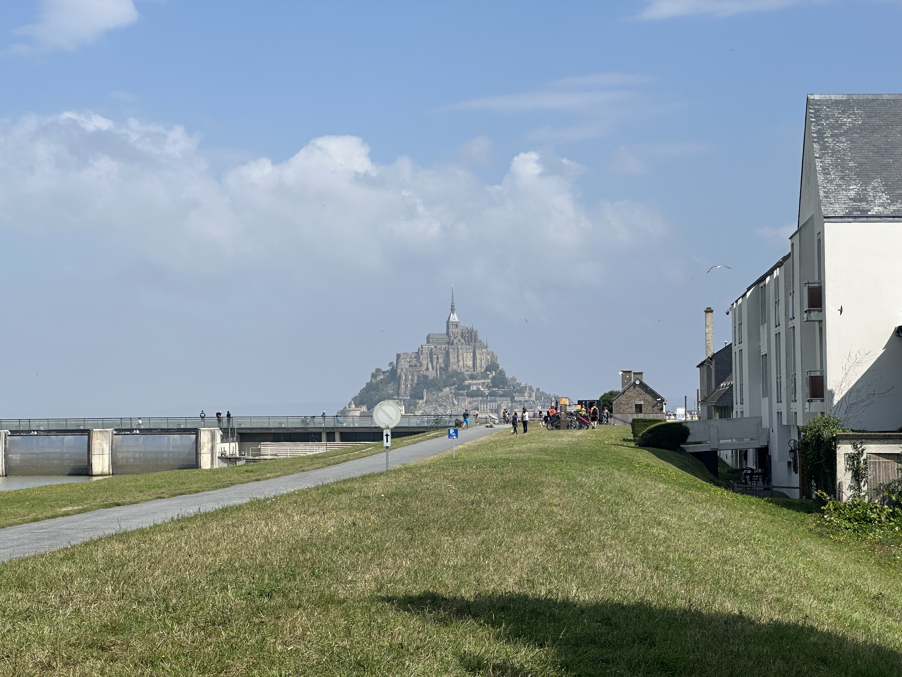
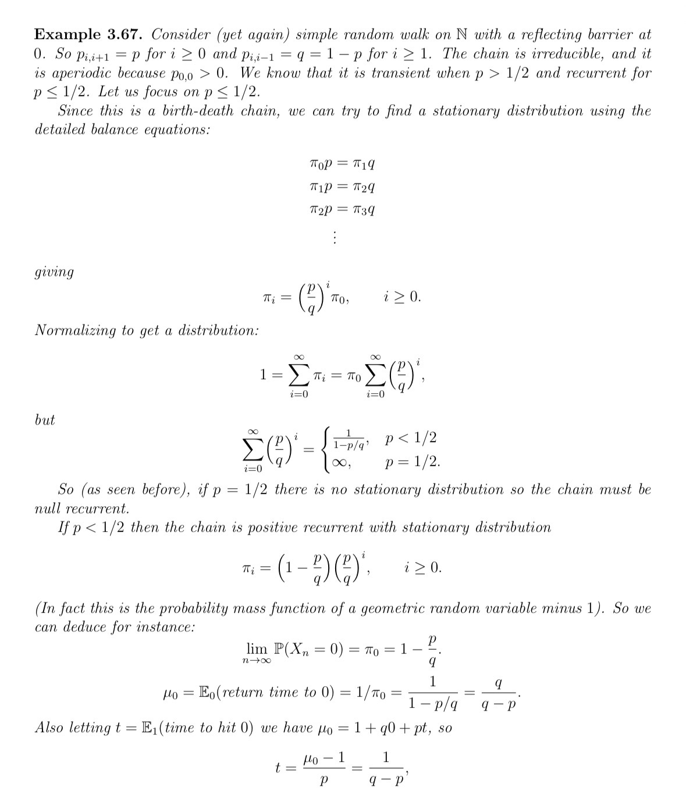

I am a second year student at the University of Bristol studying Mathematics. I specialise in analysis and stochastic analysis and I have an upcoming Markov chains and electric networks project.
Outside university I enjoy cycle touring and travelling, which I fund through tutoring work and work at the University of Exeter. More recently I’ve also been exploring whether my statistical knowledge can be applied to the stock market!

Le Mont-Saint-Michel
Park Street, Bristol
Calvi, Corse

Probability lecture notes
I currently tutor several students and previously ran the junior school maths club in sixth form. I offer tutoring for all levels up to A-level Maths, both online and in-person. Further maths and pre-university tutoring can be offered on a limited basis.
Learn More